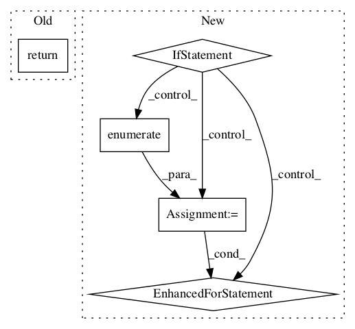

bc324fda2866eab986a604b19272137f9006a603,official/vision/beta/tasks/semantic_segmentation.py,SemanticSegmentationTask,reduce_aggregated_logs,#SemanticSegmentationTask#Any#,266

Before Change
return state
def reduce_aggregated_logs(self, aggregated_logs):
return {self.miou_metric.name: self.miou_metric.result().numpy()}
After Change
result = {}
ious = self.iou_metric.result()
// TODO(arashwan): support loading class name from a label map file.
if self.task_config.evaluation.report_per_class_iou:
for i, value in enumerate(ious.numpy()):
result.update({"iou/{}".format(i): value})
// Computes mean IoU
result.update({"mean_iou": tf.reduce_mean(ious).numpy()})
return result
In pattern: SUPERPATTERN
Frequency: 3
Non-data size: 5
Instances
Project Name: tensorflow/models
Commit Name: bc324fda2866eab986a604b19272137f9006a603
Time:
Author: null
File Name: official/vision/beta/tasks/semantic_segmentation.py
Class Name: SemanticSegmentationTask
Method Name: reduce_aggregated_logs
Project Name: openai/baselines
Commit Name: b71152eea0470ac2629c33e0fc66a54fe494949f
Time:
Author: null
File Name: baselines/common/vec_env/dummy_vec_env.py
Class Name: DummyVecEnv
Method Name: step_wait
Project Name: openai/baselines
Commit Name: b71152eea0470ac2629c33e0fc66a54fe494949f
Time:
Author: null
File Name: baselines/common/vec_env/dummy_vec_env.py
Class Name: DummyVecEnv
Method Name: reset